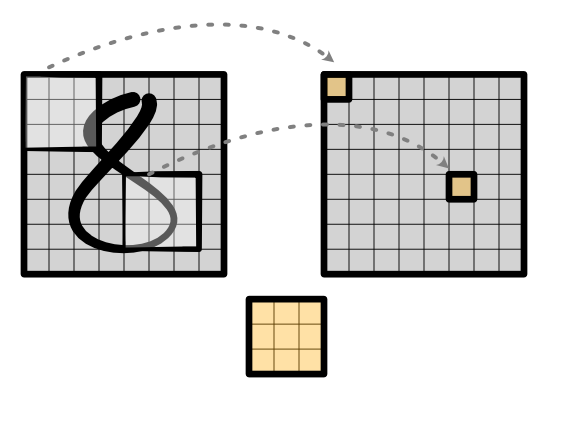
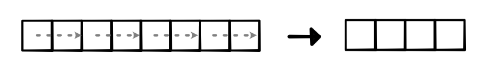
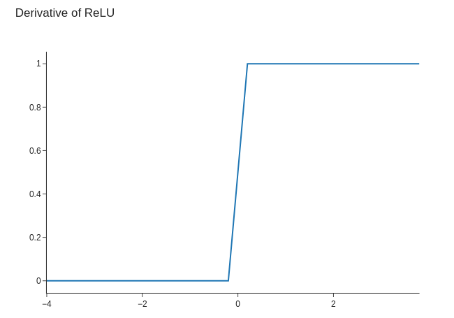
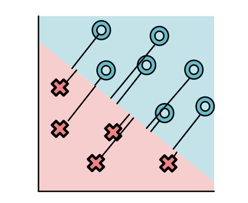
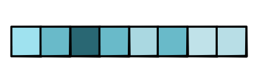

Module 4.3 - Advanced NNs
Module 4.3
Advanced NNs
View #1: Conv as sliding

Computation
Output Values
out[0] = w[0] * in[0] + w[1] * in[1] + w[2] * in[2]
out[1] = w[0] * in[1] + w[1] * in[2] + w[2] * in[3]
out[2] = w[0] * in[2] + w[1] * in[3] + w[2] * in[4]
...Two Dimensional Convolution
Instead of line, now use box
Box is anchored at the top-left
Zip-reduce is over full box!
Convolution
Conventions
Sizes
# Input image - batch x in_channel x height x width
# Weight - out_channel x in_channel x kernel_height x kernel_width
# Output image - batch x out_channel x height x widthIssues
Number of parameters scale with weight size
"Bigger" patterns require more ways to split data.
Standard Reduction

"Pooling"
Reduction applied to each region:
{kind=link}
Simple Implementation
Ensure that it is contiguous
Use View to "fold" the tensor

Why does folding work?
View requires "contiguous" tensor
View(4, 2) makes strides (2, 1)
Quiz
Outline
Differentiate all the things!
ReLU, Step, Sigmoid
Max, Argmax, Softmax
Network

Challenge 1: Input Features

Challenge 2: Variable Size Area

Challenge 3: Multiple Output

More Reductions
Heading for a max reduction
Heading for a softmax output
Quick detour
ReLU, Step, Sigmoid
Basic Operations
Introduced in Module-0
Widely used in ML
What is it?
Simple Function: ReLU
Main "activation" function

Primarily used to split the data.
Simple Function: Step
Step function is used to determine correct answer
{kind=link}
In minitorch \(f(x) = x > 0\)
ReLU
Mathematically,
Simplest max function.
Step
Mathematically,
Simplest argmax function.
Relationship
Step is derivative of ReLU
What's wrong with step?

Loss of step tells us how many points are wrong.
Derivative of Step?
Mathematically,
Not a useful function to differentiate
Altenative Function: Sigmoid
Used to determine the loss function

Sigmoid acts as a "soft" version
{kind=link}
Soft (arg)max?
Would be nice to have a version that with a useful derivative
Useful soft version of argmax.
Max, Argmax, Softmax
Challenge
How do we generalize sigmoid to multiple outputs?
Max reduction
Max is a binary associative operator
\(\max(a, b)\) returns max value
Generalized \(\text{ReLU}(a) = \max(a, 0)\)
Max Pooling
Common to apply pooling with max
Sets pooled value to "most active" in block
Forward code is easy to implement
Max Backward
Unlike sum, max throws away other values
Only top value gets used
Backward needs to know this.
Argmax
Function that returns argmax, one-hot
Generalizes step

Max Backward
First compute argmax
Only send gradient to argmax gradinput
Everything else is 0
Ties
What if there are two or more argmax's?
Max is non-differentiable, like ReLU(0).
Short answer: Ignore, pick one
HW
When writing tests for max, ties will break finite-differences
Suggestion: perturb your input by adding a small amount of random noise.
Soft argmax?
Need a soft version of argmax.
Generalizes sigmoid for our new loss function
Standard name -> softmax
Softmax
Sigmoid is Softmax
Softmax

Review
Binary |
Multiclass |
|---|---|
ReLU |
Max |
Step |
Argmax |
Sigmoid |
Softmax |
Softmax
Network
Softmax Layer
Produces a probability distribution over outputs (Sum to 1)
Derivative similar to sigmoid
Lots of interesting practical properties
Softmax in Context
Not a map!
Gradient spreads out from one point to all.
Softmax
Soft Gates
New Methods
Sigmoid and softmax produce distributions
Can be used to "control" information flow
Example
Returns a combination of x and y
Gradient is controlled
Neural Network Gates
Learn which one of the previous layers is most useful.
Gradient Flow
Layers that are used get more updates
Gradient signals which aspect was important
Can have extra layers
Selecting Choices
Gating gives us a binary choice
What if we want to select between many elements?
Softmax!
Softmax Gating
Combines many elements of X based on R
Softmax Gating
Brand name: Attention
Example: Translation
Show example
Example: GPT-3
Show example